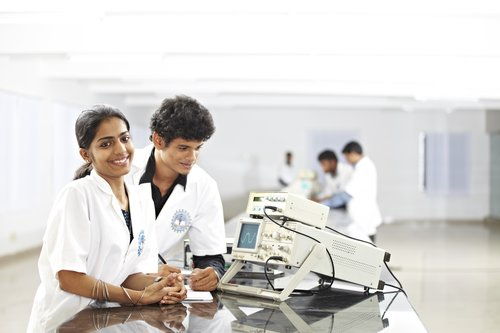
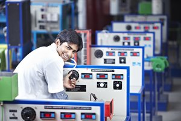
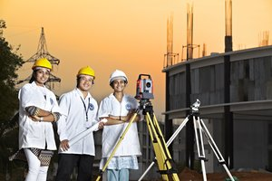
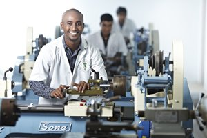

Department of computer science & Engineering
As one of the oldest departments of SSE, it provides an arduous academic milieu to the students.Our strengths are our well dexterous faculty members, who are closely associated with each and every student to nurture and guide them to bring out their academic / other talents. The mentor system which is currently at vogue makes the undergraduate students to carry out a project and to publish the same in a well reputed Scopes Indexed Journal. So far, approximately around 968 papers are published by department undergrads.
Department of Electronics & communication Engineering

Awarded as the Best Department in our University, we strive to educate and mould highly competent Electronics & Communication engineers capable of designing modern communication circuits with diverse applications ranging from electronic system design to wireless communication technology.
Department of Electrical and Electronics Engineering

A department that imparts knowledge on the functioning of the electrical equipments as well as the electronic devices. This program is designed to create engineering professionals competent to work in a range of industries like telecom, IT, electronics, Power generation etc.,
Department of Civil Engineering

Department of Civil Engineering strive to become one of the finest departments both in academics and research. To achieve we encourage the students to pursue research activities during the regular curriculum. The department has all basic facilities like soil Mechanics lab, Surveying lab, Applied geology and Structural geology lab which support in helping the student to carry out their research in various thrust areas like Highway & concrete technology and Water & sediment quality studies. To accomplish these labs are equipped with all facilities necessary for carrying out research. To highlight a few the Geology lab has one of the finest collection of more than 200 rocks and minerals specimen and structural geology lab. The hydraulics lab is equipped with the Hydraulic flume which promotes carrying out research in the field of sediment transport.
Department of Mechanical engineering

A fascinating department which deals with the design, production and operation of machines. Our students learn the engineering physics, and materials science principles to design, analyze, manufacture, and maintain mechanical systems. Join our Mechanical team of experts to become a competent professionals to be placed in in providing solutions to the challenges around us.
Department of Information Technology 
The Department of Information Technology focuses on imparting a comprehensive fundamental knowledge in the areas of Computer Programs, Software Engineering and Technology Applications. In order to enhance the core competencies, the IT department provides a ground for advanced research in areas like Data Analytics, Data Visualization, HCI, Cloud Computing etc.